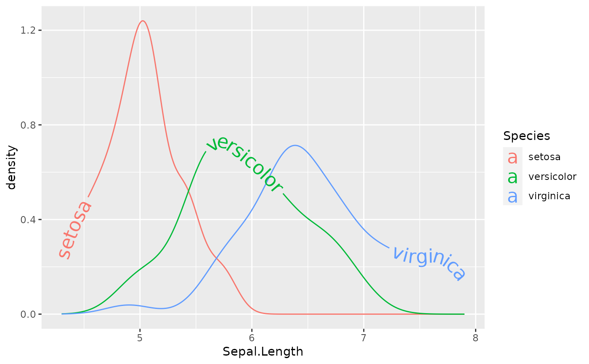

Sometimes text labels on adjacent lines can clash if the lines are not well separated vertically. One option for controlling this is to use an hjust or vjust scale that will place each label on a different position on each path, either vertically (vjust) or horizontally (hjust).
Usage
scale_hjust_discrete(..., range = c(0, 1), guide = "none")
scale_hjust_manual(
...,
values,
breaks = waiver(),
guide = "none",
na.value = NA
)
scale_hjust_identity(..., guide = "none")
scale_vjust_discrete(..., guide = "none", range = c(-0.5, 1.5))
scale_vjust_manual(
...,
values,
breaks = waiver(),
guide = "none",
na.value = NA
)
scale_vjust_identity(..., guide = "none")Arguments
- ...
Other arguments passed on to [continuous_scale()], [binned_scale], or [discrete_scale()] as appropriate, to control name, limits, breaks, labels and so forth.
- range
Output range of hjust and vjust. Must lie between 0 and 1 for hjust.
- guide
A function used to create a guide or its name. See [guides()] for more information.
- values
a set of aesthetic values to map data values to. The values will be matched in order (usually alphabetical) with the limits of the scale, or with breaks if provided. If this is a named vector, then the values will be matched based on the names instead. Data values that don't match will be given na.value.
- breaks
One of: - `NULL` for no breaks - `waiver()` for the default breaks computed by the [transformation object][scales::trans_new()] - A numeric vector of positions - A function that takes the limits as input and returns breaks as output (e.g., a function returned by [scales::extended_breaks()]). Also accepts rlang [lambda][rlang::as_function()] function notation.
- na.value
Missing values will be replaced with this value.
Details
The simplest way to separate labels is by adding `scale_hjust_discrete()` or `scale_vjust_discrete()` to your plot, but you can get more control with `scale_hjust_manual` and `scale_vjust_manual`.
Examples
ggplot(iris, aes(Sepal.Length, color = Species)) +
geom_textdensity(aes(label = Species, hjust = Species), size = 6) +
scale_hjust_discrete()
